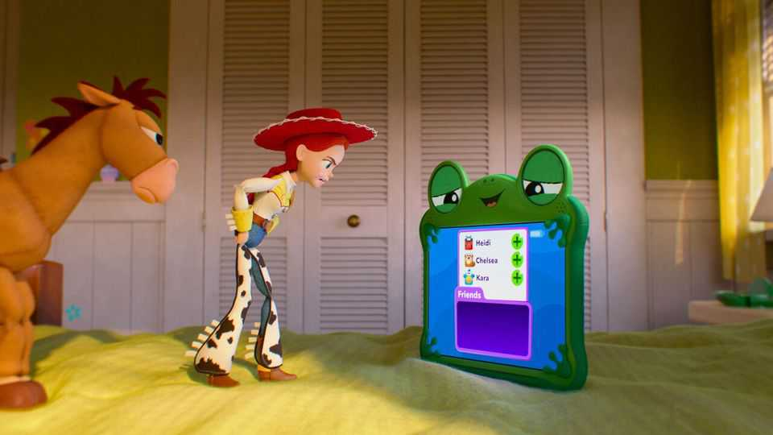
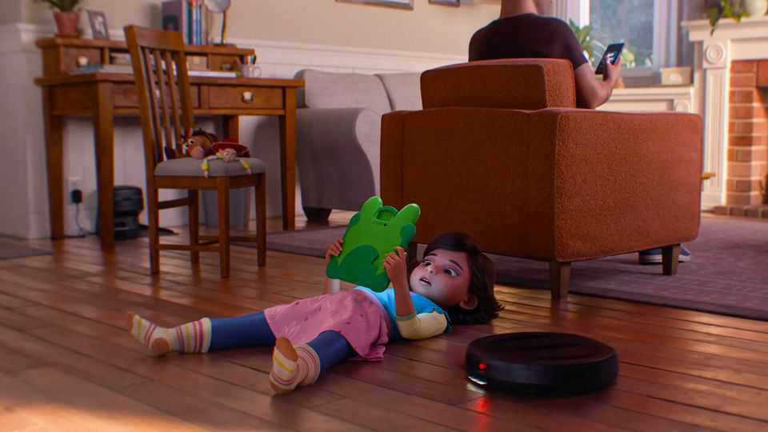

The real villain in “Toy Story 5” is not whom you would expect
Why Pixar’s latest romp is one of the best animated films ever
June 25th 2026

Cowgirls are an intrepid bunch. Intent on figuring out why the neighbours’ twin children refuse to play with eight-year-old Bonnie, Jessie (Bonnie’s doll) saddles up, crosses the street and peers in the window. Inside, the twins are clenching their screens and swiping. Outside in the garden, discarded playthings are griping. “The age of toys is over,” wails a small robot.
Pixar has turned the world of junky plastic into gold. “Toy Story” (1995)—the first full-length film made with computer-generated imagery—and the next three films earned more than $4.5bn at the box office (in today’s money). “Toy Story 5”, released on June 19th, could become the highest-grossing film of the year. But unlike many mindless blockbusters, this film is soulful and splendid.
That is because it deals amusingly with urgent themes, such as how technology has hijacked childhood. Hoping to help their shy daughter make friends, Bonnie’s parents buy Lilypad, a tablet; you then watch Bonnie’s mood change with every ping from her group chats. The discarded toys are only the most vocal victims. The biggest loser is Bonnie, who misses out on the thrill of imaginative play and feels even greater social alienation online.

Previous “Toy Story” flicks have also reflected their era’s crazes and concerns. The second film came out during the dotcom boom; in it, Woody, a cowboy, has become a collectible, raising questions about whether value stems more from relationships or money. “Toy Story 5” reprises and updates the first film’s premise—displacement by something new and snazzy.
Unexpectedly, the film’s biggest villain is not Lilypad, but Bonnie’s unwitting parents. Passive and mindlessly gentle, they are tech-addicted themselves, fail to enforce the screen-time rules they set for their child and are too distracted to notice her descent into greater gloom.
Young audiences will walk out of this film perceiving old-fashioned toys and screens a little bit differently. Parents will leave wondering whether they are really as blind as the film makes them out to be. ■
For more on the latest books, films, TV shows, albums and controversies, sign up to Plot Twist, our weekly subscriber-only newsletter